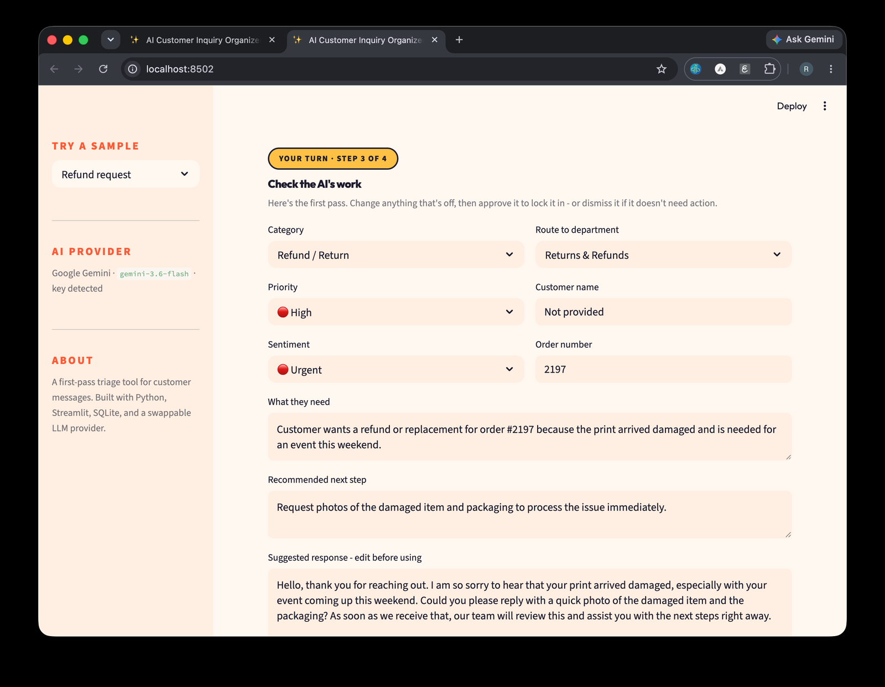

I spent years running operations — inventory, workflows, customer experience, a team. Now I build software for the problems I used to solve by hand.
Selected work
Customer messages arrive unstructured — different wording, tone, and detail every time. Someone has to read each one, work out what the customer needs, judge how urgent it is, and decide what happens next, before any real work starts.
This tool does that first pass: it sorts the message, ranks its urgency, routes it to a department, and drafts a reply — then hands the whole thing to a person for a yes or no.

What I bring
Python, JavaScript, TypeScript, SQL / SQLite, Git & GitHub, LLM API integration, prompt design.
Workflow automation, process improvement, systems implementation, operational documentation.
Cross-functional coordination, stakeholder communication, customer experience, intake and access workflows.
Background
Currently completing a B.S. in Computer Science — Business & AI at Maestro College (4.0 GPA), with an embedded A.A.S. in AI Software Engineering.
Open to
Remote roles where operations knowledge and hands-on building are both useful. If that sounds like your team, I'd like to hear about it.